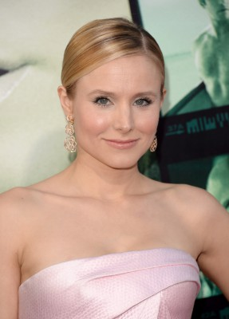
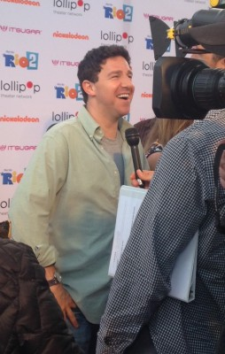
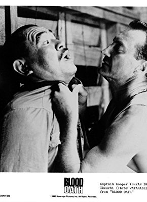
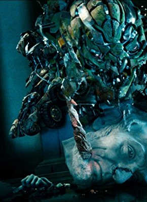

#2203 Das Königreich der Katzen
 gesehen am 07.02.2016
gesehen am 07.02.2016

 IMDB-Wertung: 7.3 / 10
IMDB-Wertung: 7.3 / 10  Metascore: 0
Metascore: 0 
Die naive, etwas ungeschickte 17-jährige Haru rettet auf ihrem Schulweg eine Katze vor einem nahenden Lastwagen. Zu ihrer Verwunderung stellt die Katze sich darauf auf ihre Hinterbeine und spricht ihrer Retterin ihren Dank aus, bevor sie verschwindet. In der darauffolgenden Nacht erhält Haru zudem hohen Besuch. Der Katzenkönig höchstpersönlich ist mit seinem Gefolge gekommen, um der verblüfften Schülerin zu verkünden, dass ihr auf Grund der Rettung seines Sohnes Prinz Lune die große Ehre zuteil werde, eben jenen Thronfolger zu ehelichen. Am nächsten Morgen tut das Mädchen noch alles als sonderbaren Traum ab, doch schnell muss sie einsehen, dass sie wohl schon bald als Katzenbraut vor den Altar geführt werden wird.
Jahr: 2002
Dauer: 75 Minuten
FSK: 0
Land: Japan Studio: UFATonspuren: DTS - ,
Untertitel: Deutsch,
Auflösung: 1080p (1920x1040) Größe: 3860 MB
Genre: Komödie, Abenteuer, Fantasy, Animation/Trick, Familie, Liebe
Regisseur: Hiroyuki Morita
Drehbuch: Aoi Hiiragi, Reiko Yoshida, Cindy Davis Hewitt, Donald H. Hewitt
Soundtrack: Yuji Nomi
Darsteller:
- Aki Maeda als Yuki
 Takayuki Yamada als Lune
Takayuki Yamada als Lune Ken Yasuda als Additional Voices
Ken Yasuda als Additional Voices Anne Hathaway als Haru
Anne Hathaway als Haru Cary Elwes als The Baron
Cary Elwes als The Baron Judy Greer als Yuki
Judy Greer als Yuki-  Kristen Bell als Hiromi
 Rene Auberjonois als Natori
Rene Auberjonois als Natori Andy Richter als Natoru
Andy Richter als Natoru Peter Boyle als Muta
Peter Boyle als Muta Elliott Gould als Toto
Elliott Gould als Toto- Kristine Sutherland als Haru's Mother
 Tim Curry als The Cat King
Tim Curry als The Cat King Erin Chambers als Additional Voices
Erin Chambers als Additional Voices Robert Clotworthy als Additional Voices
Robert Clotworthy als Additional Voices- Kat Cressida als Additional Voices
 Terri Douglas als Additional Voices
Terri Douglas als Additional Voices- Courtnee Draper als Additional Voices
-  Jason Harris als Additional Voices
 Bradley Pierce als Additional Voices
Bradley Pierce als Additional Voices- Bari Suzuki als Additional Voices
- Chizuru Ikewaki als Haru
- Yoshihiko Hakamada als Baron
- Hitomi Satô als Hiromi
- Kenta Satoi als Natori
- Mari Hamada als Natoru
-  Tetsu Watanabe als Muta
- Yôsuke Saitô als Toto
- Kumiko Okae als Haru's Mother
- Tetsurô Tanba als Cat King
 Yô Ôizumi als Additional Voices
Yô Ôizumi als Additional Voices- Youko Honna als Chika
- Andrew Bevis als Prince Lune
- Katia Coe als Little Haru
-  Greg Berg als Additional Voices
- Brian Herskowitz als Additional Voices
 Mona Marshall als Additional Voices
Mona Marshall als Additional Voices- Randall Montgomery als Additional Voices
- Diz White als Additional Voices
- Jenny Andrews als French girl
- Makoto Aoki als Additional Voices
- Katsumi Chô als Additional Voices
- Daisuke Egawa als Additional Voices
- Yayoi Kazuki als Additional Voices
- Yûji Kishi als Additional Voices
- Tae Komamura als Additional Voices
- Mitsuru Miyamoto als Additional Voices
- Toshihiro Nakamura als Additional Voices
- Toshitaka Shimizu als Additional Voices
- Tarusuke Shingaki als Additional Voices
Datei: X:\Kinder Anime\Studio Ghibli\Königreich der Katzen, Das (2002, FSK0, 1920x1040).mkv seit 20.10.2015
Festplatte: Kinder-Filme+Trick
 Es gibt insgesamt 27 Filme in der Gruppe 'Kinder Anime\Studio Ghibli'
Es gibt insgesamt 27 Filme in der Gruppe 'Kinder Anime\Studio Ghibli'